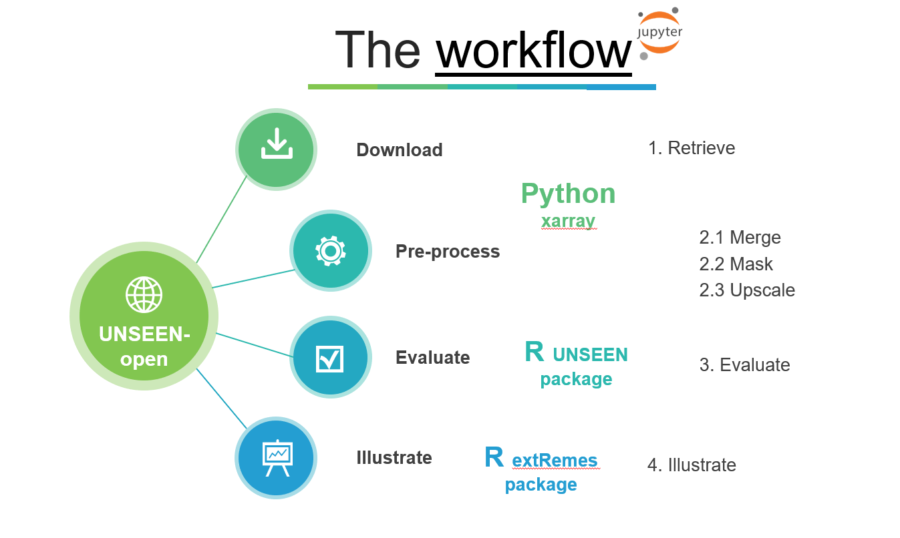

UNSEEN-open¶
In this project, the aim is to build an open, reproducible, and transferable workflow for UNSEEN. The workflow consists of four steps, as illustrated below:

In this project, UNSEEN-open is applied to assess two extreme events in 2020: February 2020 UK precipitation and the 2020 Siberian heatwave.
February average precipitation was the highest on record in the UK: with what frequency of occurrence can February extreme precipitation events such as the 2020 event be expected?
The Siberian heatwave has broken the records as well. Could such an event be anticipation with UNSEEN? And to what extend can we expect changes in the frequency of occurrence and magnitude of these kind of events?
Overview¶
Here we provide an overview of the steps taken to apply UNSEEN-open.
Download¶
We want to download February precipitation over the UK and March-May average temperature over Siberia. We retrieve all SEAS5 seasonal forecasts that are forecasting the target months (i.e. February and MAM) and we retrieve ERA5 reanalysis for the same regions and variables for evaluation.
[1]:
import sys
sys.path.append('../')
[2]:
import src.CDSretrieve as retrieve
import src.Preprocess as preprocess
[3]:
retrieve.retrieve_SEAS5(variables = ['2m_temperature','2m_dewpoint_temperature'], target_months = [3,4,5],
area = [70, -11, 30, 120], folder = '../../Siberia_example/SEAS5/')
[4]:
retrieve.retrieve_SEAS5(variables = 'total_precipitation', target_months = [2],
area = [60, -11, 50, 2], folder = '../../UK_example/SEAS5/')
[5]:
retrieve.retrieve_ERA5(variables = ['2m_temperature','2m_dewpoint_temperature'], target_months = [3,4,5],
area = [70, -11, 30, 120], folder = '../../Siberia_example/ERA5/')
[6]:
retrieve.retrieve_ERA5(variables = 'total_precipitation', target_months = [2],
area = [60, -11, 50, 2], folder = '../../UK_example/ERA5/')
Preprocess¶
In the preprocessing step, we first merge all downloaded files into one netcdf file. Then the rest of the preprocessing depends on the definition of the extreme event. For example, for the UK case study, we want to extract the UK average precipitation while for the Siberian heatwave we will just used the defined area to spatially average over. For the MAM season, we still need to take the seasonal average, while for the UK we already have the average February precipitation.
[7]:
SEAS5_Siberia = preprocess.merge_SEAS5(folder = '../../Siberia_example/SEAS5/', target_months = [3,4,5])
SEAS5_Siberia
Lead time: 2
1
12
[7]:
- latitude: 41
- leadtime: 3
- longitude: 132
- number: 25
- time: 105
- longitude(longitude)float32-11.0 -10.0 -9.0 ... 119.0 120.0
- units :
- degrees_east
- long_name :
- longitude
array([-11., -10., -9., -8., -7., -6., -5., -4., -3., -2., -1., 0., 1., 2., 3., 4., 5., 6., 7., 8., 9., 10., 11., 12., 13., 14., 15., 16., 17., 18., 19., 20., 21., 22., 23., 24., 25., 26., 27., 28., 29., 30., 31., 32., 33., 34., 35., 36., 37., 38., 39., 40., 41., 42., 43., 44., 45., 46., 47., 48., 49., 50., 51., 52., 53., 54., 55., 56., 57., 58., 59., 60., 61., 62., 63., 64., 65., 66., 67., 68., 69., 70., 71., 72., 73., 74., 75., 76., 77., 78., 79., 80., 81., 82., 83., 84., 85., 86., 87., 88., 89., 90., 91., 92., 93., 94., 95., 96., 97., 98., 99., 100., 101., 102., 103., 104., 105., 106., 107., 108., 109., 110., 111., 112., 113., 114., 115., 116., 117., 118., 119., 120.], dtype=float32) - number(number)int320 1 2 3 4 5 6 ... 19 20 21 22 23 24
- long_name :
- ensemble_member
array([ 0, 1, 2, 3, 4, 5, 6, 7, 8, 9, 10, 11, 12, 13, 14, 15, 16, 17, 18, 19, 20, 21, 22, 23, 24], dtype=int32) - latitude(latitude)float3270.0 69.0 68.0 ... 32.0 31.0 30.0
- units :
- degrees_north
- long_name :
- latitude
array([70., 69., 68., 67., 66., 65., 64., 63., 62., 61., 60., 59., 58., 57., 56., 55., 54., 53., 52., 51., 50., 49., 48., 47., 46., 45., 44., 43., 42., 41., 40., 39., 38., 37., 36., 35., 34., 33., 32., 31., 30.], dtype=float32) - time(time)datetime64[ns]1982-03-01 ... 2016-05-01
- long_name :
- time
array(['1982-03-01T00:00:00.000000000', '1982-04-01T00:00:00.000000000', '1982-05-01T00:00:00.000000000', '1983-03-01T00:00:00.000000000', '1983-04-01T00:00:00.000000000', '1983-05-01T00:00:00.000000000', '1984-03-01T00:00:00.000000000', '1984-04-01T00:00:00.000000000', '1984-05-01T00:00:00.000000000', '1985-03-01T00:00:00.000000000', '1985-04-01T00:00:00.000000000', '1985-05-01T00:00:00.000000000', '1986-03-01T00:00:00.000000000', '1986-04-01T00:00:00.000000000', '1986-05-01T00:00:00.000000000', '1987-03-01T00:00:00.000000000', '1987-04-01T00:00:00.000000000', '1987-05-01T00:00:00.000000000', '1988-03-01T00:00:00.000000000', '1988-04-01T00:00:00.000000000', '1988-05-01T00:00:00.000000000', '1989-03-01T00:00:00.000000000', '1989-04-01T00:00:00.000000000', '1989-05-01T00:00:00.000000000', '1990-03-01T00:00:00.000000000', '1990-04-01T00:00:00.000000000', '1990-05-01T00:00:00.000000000', '1991-03-01T00:00:00.000000000', '1991-04-01T00:00:00.000000000', '1991-05-01T00:00:00.000000000', '1992-03-01T00:00:00.000000000', '1992-04-01T00:00:00.000000000', '1992-05-01T00:00:00.000000000', '1993-03-01T00:00:00.000000000', '1993-04-01T00:00:00.000000000', '1993-05-01T00:00:00.000000000', '1994-03-01T00:00:00.000000000', '1994-04-01T00:00:00.000000000', '1994-05-01T00:00:00.000000000', '1995-03-01T00:00:00.000000000', '1995-04-01T00:00:00.000000000', '1995-05-01T00:00:00.000000000', '1996-03-01T00:00:00.000000000', '1996-04-01T00:00:00.000000000', '1996-05-01T00:00:00.000000000', '1997-03-01T00:00:00.000000000', '1997-04-01T00:00:00.000000000', '1997-05-01T00:00:00.000000000', '1998-03-01T00:00:00.000000000', '1998-04-01T00:00:00.000000000', '1998-05-01T00:00:00.000000000', '1999-03-01T00:00:00.000000000', '1999-04-01T00:00:00.000000000', '1999-05-01T00:00:00.000000000', '2000-03-01T00:00:00.000000000', '2000-04-01T00:00:00.000000000', '2000-05-01T00:00:00.000000000', '2001-03-01T00:00:00.000000000', '2001-04-01T00:00:00.000000000', '2001-05-01T00:00:00.000000000', '2002-03-01T00:00:00.000000000', '2002-04-01T00:00:00.000000000', '2002-05-01T00:00:00.000000000', '2003-03-01T00:00:00.000000000', '2003-04-01T00:00:00.000000000', '2003-05-01T00:00:00.000000000', '2004-03-01T00:00:00.000000000', '2004-04-01T00:00:00.000000000', '2004-05-01T00:00:00.000000000', '2005-03-01T00:00:00.000000000', '2005-04-01T00:00:00.000000000', '2005-05-01T00:00:00.000000000', '2006-03-01T00:00:00.000000000', '2006-04-01T00:00:00.000000000', '2006-05-01T00:00:00.000000000', '2007-03-01T00:00:00.000000000', '2007-04-01T00:00:00.000000000', '2007-05-01T00:00:00.000000000', '2008-03-01T00:00:00.000000000', '2008-04-01T00:00:00.000000000', '2008-05-01T00:00:00.000000000', '2009-03-01T00:00:00.000000000', '2009-04-01T00:00:00.000000000', '2009-05-01T00:00:00.000000000', '2010-03-01T00:00:00.000000000', '2010-04-01T00:00:00.000000000', '2010-05-01T00:00:00.000000000', '2011-03-01T00:00:00.000000000', '2011-04-01T00:00:00.000000000', '2011-05-01T00:00:00.000000000', '2012-03-01T00:00:00.000000000', '2012-04-01T00:00:00.000000000', '2012-05-01T00:00:00.000000000', '2013-03-01T00:00:00.000000000', '2013-04-01T00:00:00.000000000', '2013-05-01T00:00:00.000000000', '2014-03-01T00:00:00.000000000', '2014-04-01T00:00:00.000000000', '2014-05-01T00:00:00.000000000', '2015-03-01T00:00:00.000000000', '2015-04-01T00:00:00.000000000', '2015-05-01T00:00:00.000000000', '2016-03-01T00:00:00.000000000', '2016-04-01T00:00:00.000000000', '2016-05-01T00:00:00.000000000'], dtype='datetime64[ns]') - leadtime(leadtime)int642 3 4
array([2, 3, 4])
- t2m(time, number, latitude, longitude)float32dask.array<chunksize=(3, 25, 41, 132), meta=np.ndarray>
- units :
- K
- long_name :
- 2 metre temperature
Array Chunk Bytes 56.83 MB 1.62 MB Shape (105, 25, 41, 132) (3, 25, 41, 132) Count 105 Tasks 35 Chunks Type float32 numpy.ndarray - d2m(time, number, latitude, longitude)float32dask.array<chunksize=(3, 25, 41, 132), meta=np.ndarray>
- units :
- K
- long_name :
- 2 metre dewpoint temperature
Array Chunk Bytes 56.83 MB 1.62 MB Shape (105, 25, 41, 132) (3, 25, 41, 132) Count 105 Tasks 35 Chunks Type float32 numpy.ndarray
- Conventions :
- CF-1.6
- history :
- 2020-09-08 09:34:17 GMT by grib_to_netcdf-2.16.0: /opt/ecmwf/eccodes/bin/grib_to_netcdf -S param -o /cache/data8/adaptor.mars.external-1599557646.6267724-24121-12-ceca08d8-8d7f-4932-b0d0-bf91091ad8cf.nc /cache/tmp/ceca08d8-8d7f-4932-b0d0-bf91091ad8cf-adaptor.mars.external-1599557646.6274142-24121-4-tmp.grib
[10]:
SEAS5_UK = preprocess.merge_SEAS5(folder = '../../UK_example/SEAS5/', target_months = [2])
SEAS5_UK
Lead time: 1
12
11
10
9
[10]:
- latitude: 11
- leadtime: 5
- longitude: 14
- number: 25
- time: 35
- longitude(longitude)float32-11.0 -10.0 -9.0 ... 0.0 1.0 2.0
- units :
- degrees_east
- long_name :
- longitude
array([-11., -10., -9., -8., -7., -6., -5., -4., -3., -2., -1., 0., 1., 2.], dtype=float32) - number(number)int320 1 2 3 4 5 6 ... 19 20 21 22 23 24
- long_name :
- ensemble_member
array([ 0, 1, 2, 3, 4, 5, 6, 7, 8, 9, 10, 11, 12, 13, 14, 15, 16, 17, 18, 19, 20, 21, 22, 23, 24], dtype=int32) - latitude(latitude)float3260.0 59.0 58.0 ... 52.0 51.0 50.0
- units :
- degrees_north
- long_name :
- latitude
array([60., 59., 58., 57., 56., 55., 54., 53., 52., 51., 50.], dtype=float32)
- time(time)datetime64[ns]1982-02-01 ... 2016-02-01
- long_name :
- time
array(['1982-02-01T00:00:00.000000000', '1983-02-01T00:00:00.000000000', '1984-02-01T00:00:00.000000000', '1985-02-01T00:00:00.000000000', '1986-02-01T00:00:00.000000000', '1987-02-01T00:00:00.000000000', '1988-02-01T00:00:00.000000000', '1989-02-01T00:00:00.000000000', '1990-02-01T00:00:00.000000000', '1991-02-01T00:00:00.000000000', '1992-02-01T00:00:00.000000000', '1993-02-01T00:00:00.000000000', '1994-02-01T00:00:00.000000000', '1995-02-01T00:00:00.000000000', '1996-02-01T00:00:00.000000000', '1997-02-01T00:00:00.000000000', '1998-02-01T00:00:00.000000000', '1999-02-01T00:00:00.000000000', '2000-02-01T00:00:00.000000000', '2001-02-01T00:00:00.000000000', '2002-02-01T00:00:00.000000000', '2003-02-01T00:00:00.000000000', '2004-02-01T00:00:00.000000000', '2005-02-01T00:00:00.000000000', '2006-02-01T00:00:00.000000000', '2007-02-01T00:00:00.000000000', '2008-02-01T00:00:00.000000000', '2009-02-01T00:00:00.000000000', '2010-02-01T00:00:00.000000000', '2011-02-01T00:00:00.000000000', '2012-02-01T00:00:00.000000000', '2013-02-01T00:00:00.000000000', '2014-02-01T00:00:00.000000000', '2015-02-01T00:00:00.000000000', '2016-02-01T00:00:00.000000000'], dtype='datetime64[ns]') - leadtime(leadtime)int642 3 4 5 6
array([2, 3, 4, 5, 6])
- tprate(time, number, latitude, longitude)float32dask.array<chunksize=(1, 25, 11, 14), meta=np.ndarray>
- units :
- m s**-1
- long_name :
- Mean total precipitation rate
Array Chunk Bytes 539.00 kB 15.40 kB Shape (35, 25, 11, 14) (1, 25, 11, 14) Count 105 Tasks 35 Chunks Type float32 numpy.ndarray
- Conventions :
- CF-1.6
- history :
- 2020-05-13 14:48:38 GMT by grib_to_netcdf-2.16.0: /opt/ecmwf/eccodes/bin/grib_to_netcdf -S param -o /cache/data9/adaptor.mars.external-1589381301.6300867-8112-3-49ba0ab2-34fe-4364-9dec-700bf911b079.nc /cache/tmp/49ba0ab2-34fe-4364-9dec-700bf911b079-adaptor.mars.external-1589381301.6558385-8112-2-tmp.grib
[ ]:
Read more¶
[ ]: